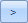

Get started:
-
Start Eclipse Administration and log in as an Eclipse administrator.
-
On the Case Management ribbon, select Case Management > Case Management.
-
In the Case Management screen, select the needed managing client and case.
Click the Reports
tab. (If it is not visible, click  on
the right side of the window’s tabs.)
on
the right side of the window’s tabs.)
Click  next
to a report to be edited and continue with the following steps.
next
to a report to be edited and continue with the following steps.
To add content to the report:
-
In the Edit Report dialog box, locate and select a needed item(s) (field, tag, and/or tag group as applicable) in the Available (left) list. Tips:
-
Scroll to see all available items.
-
To select multiple items, click an item name, then Shift+click or Ctrl+click additional items to choose a contiguous or non-contiguous set, respectively.
-
-
When items have been selected, click

. -
Repeat these steps if needed to add other items.
To remove content from a report:
-
In the Edit Report dialog box, locate and select an item to be removed (field, tag, and/or tag group as applicable) in the Selected (right) list.
Scroll to see all selected items.
To select multiple items, click an item name, then Shift+click or Ctrl+click additional items to choose a contiguous or non-contiguous set, respectively.
-
When items have been selected, click .
-
Repeat these steps if needed to remove other items.
When items to appear in the report have been finalized in the Selected column, organize them in a way to best meet the needs of your users. Items will be displayed left to right in Eclipse based on the top-to-bottom order specified here. To change the order:
-
In the Selected list, click an item to be reordered.
-
Click Up or Down until the item is in the desired location.
-
Repeat these steps to reorder other items.
When finished, click OK.
Repeat these steps for other reports to be configured.
Optional: Continue with report security (next procedure).
 , on the
Eclipse Administration Reports tab.
, on the
Eclipse Administration Reports tab.